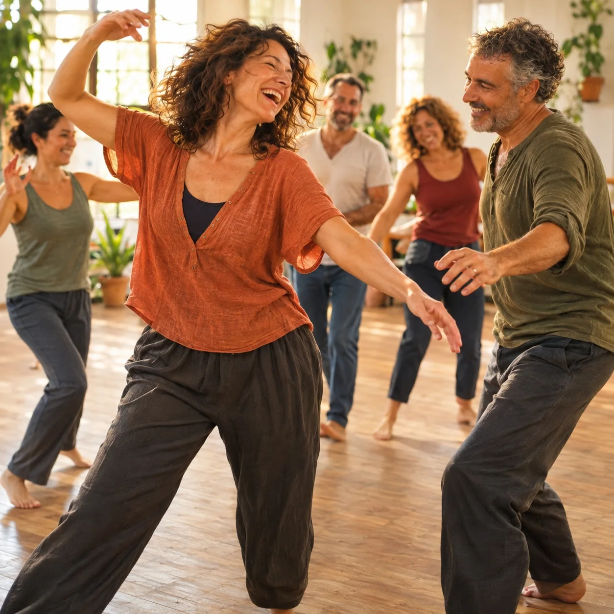
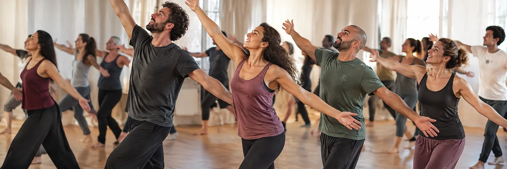
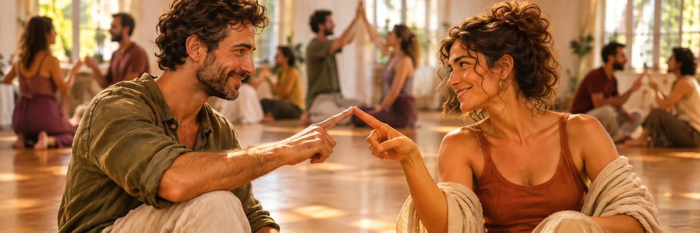

הדר לוריא
חוקרת את החיבור בין גוף, רגשות ותקשורת. מנחה תנועה, תקשורת מקרבת, יוגה ומדיטציה, ומביאה לקבוצה רגישות ועומק
המפגש הקרוב
יוצאים להרפתקה
לפעמים לא צריך לשנות את החיים שלנו,
אלא את הדרך שבה אנחנו מרגישים בתוכם
יותר שמחה. יותר חופש. יותר אהבה
ערב של מוזיקה, תנועה
וחיבור אנושי

דמיינו שאתם קמים בבוקר
עם שמחת חיים
ואתם
עריםנרגשיםפתוחים
למה שהיום יביא איתו
אבל מתישהו במהלך היום
בעבודה, בין
משימותדאגותואחריות
האנרגיה מתרוקנת
והכול נהיה כבד ועמוס
וקשה לראות את האור
שיהיה בהם גם
משחקסקרנותוהנאה
לפעמים מה שהכי חסר לנו
הוא לא משהו חדש שיקרה לנו
אלא היכולת להרגיש מחדש
את כל מה שכבר יש
וגם לדעת להגיד לא
כשמשהו לא מתאים לנו
בפנים משהו
מתרכך
פחות
ובמקומם נכנס חופש
לצחוק על עצמנולהשתטותלהתלהב
ולהיות פשוט
מי שאנחנו
וכשזה קורה
ואז
קל ליצור חברויות, לחוש שייכות
ולבנות קשרים שיש בהם
מתברר שיש בנו
הרבה יותר אהבה
ממה שחשבנו
שאנחנו יכולים להאיר גם לאחרים
ולהביא רכות ונוכחות
לאנשים שסביבנו
ולפעמים לשנות
למישהו את היום
רק מעצם המפגש
בהדרגה
האתגרים לא נעלמים
והשגרה עדיין שם
אבל הדרך שבה אנחנו חיים אותם
יכולה להשתנות מאוד
ופוגשים אותם עם לב פתוח
ועם חוסן אישי
וזה אולי הדבר הכי משמעותי
שאפשר לקחת מהחוויה הזאת
לא רק להרגיש טוב במשך שעתיים
אלא לגלות בתוכנו עוד
ולהביא אותם איתנו
אל החיים שמחכים לנו בחוץ
בואו נראה איך זה קורה בפועל

בין העבודה, הבית והראש שלא נעצר, הימים מתחילים להיראות אותו דבר
בערב הזה יוצאים מזה לשעתיים, למקום אחר, בין אנשים אחרים, ובתנועה שמזיזה גם את מה שבפנים
ומתוך כל זה יכולות לצמוח חברות, קרבה ואולי גם אהבה
הסבר קצר על מה שהולך לקרות ושיתופים מהמפגש האחרון

מוזיקה מיוחדת ותרגילי תנועה פשוטים, בזוגות ובקבוצה, שמוציאים מהראש ומכניסים לגוף
כל רגע במפגש מונחה, אנחנו מסבירים כל תרגיל ומדגימים אותו

שובבות וכיף, הרבה תנועה, והדופק עולה

הקצב יורד, נכנסים פנימה, והלב נפתח, ומגלים את עצמנו מחדש
כאן הקסם מתחיל לקרות

הקצב עולה שוב, ויוצאים ערניים ומלאי חיים
פוגשים שוב את אותם אנשים וממשיכים מאותה נקודה, מפגש אחרי מפגש
ופנים חדשות מצטרפות
בין מפגש למפגש
ומה אם כל מה שצריך זה פשוט ליהנות?
לפעמים השגרה גורמת לנו להרגיש
שאנחנו חוזרים על אותם הדברים
אבל חוויה חדשה, אנשים חדשים
וקצת שמחה יכולים לפתוח
משהו שלא ציפינו לו
מי אמר ששינוי חייב להתחיל
בצעד גדול?
לפעמים מספיק לצאת מהשגרה,
לתת לגוף לנוע בחופשיות
ולגלות איך התנועה הזאת
מעוררת משהו חדש גם בתוכנו
כי במקום שבו יש תנועה,
החיים מתעוררים

במפגש הזה לומדים להתחבר מתוך אמון וביטחון. לדוגמה, אפשר לעצום עיניים ולהרגיש שיש על מי לסמוך, ואת התחושה הזו לוקחים איתנו הלאה, אל החיים
לנשים וגברים בגילאי 35–55
שרוצים
לא צריך ניסיון בריקוד
הכול בהנחיה פשוטה, וכל אחד משתתף בקצב שמתאים לו
הגעתי בלי ממש לדעת למה לצפות. בהתחלה הרגשתי קצת מוזר, אבל אחרי כמה דקות פשוט שכחתי מזה. יצאתי עם חיוך שלא ירד לי כל הדרך הביתה
אני לא טיפוס של סדנאות ובטח לא של ריקודים. חבר שכנע אותי להגיע, ולהפתעתי ממש נהניתי. הייתה אווירה טובה ואנשים פתוחים. משהו שונה מהיציאות הרגילות
בתקופה האחרונה הרגשתי שכל השבועות נראים אותו דבר. הערב הזה היה בדיוק היציאה מהשגרה שהייתי צריכה. הכרתי אנשים חדשים והרגשתי קצת יותר חיה
מה שהפתיע אותי זה כמה קל היה להתחבר לאנשים בלי השיחות הרגילות של מי אתה ומה אתה עושה. פשוט היינו שם ביחד ונהנינו
חששתי שכולם יידעו לרקוד ורק אני אעמוד בצד. בפועל לא הרגשתי שמישהו בוחן אותי. עשיתי מה שהרגיש לי נכון ובסוף ממש לא רציתי שזה ייגמר
באתי בשביל ערב קצת אחר, לא בשביל לשנות את החיים. אבל יצאתי עם אנרגיה טובה ותחושה שבא לי לעשות עוד דברים חדשים. כבר מחכה לפעם הבאה
לא ידעתי בדיוק לאן אני מגיעה, אבל אמרתי לעצמי שבא לי לנסות משהו אחר. היה קצת מביך בהתחלה, ואז פתאום מצאתי את עצמי צוחקת עם אנשים שבכלל לא הכרתי
הגעתי אחרי יום עבודה ארוך וכמעט ביטלתי. אחרי עשר דקות כבר שכחתי מהיום שהיה לי. שעתיים בלי טלפון ובלי לחשוב על מיליון דברים
מה שאהבתי זה שלא הייתי צריכה להיות מעניינת או להרשים אף אחד. פשוט להיות שם, ליהנות מהמוזיקה ומהאנשים. זה היה ממש משחרר
חשבתי שזה יהיה קצת רוחני מדי בשבילי. בסוף זה היה הרבה יותר פשוט ממה שדמיינתי. מוזיקה טובה, אנשים נחמדים ואווירה שמאפשרת להשתחרר
באתי לבד וחששתי שכולם כבר מכירים את כולם. תוך כמה דקות הרגשתי חלק מהקבוצה. זה כנראה מה שהכי הפתיע אותי
לא זוכר מתי בפעם האחרונה עשיתי משהו כל כך שונה מהשגרה שלי. לא הכול הרגיש לי טבעי בהתחלה, אבל דווקא בגלל זה שמחתי שבאתי
יש משהו מיוחד בלהכיר אנשים בלי להתחיל מכל השאלות הרגילות. הרגשתי שנוצרו חיבורים בצורה הרבה יותר טבעית
הכי אהבתי שלא היה צריך להצליח בשום דבר. אף אחד לא בדק איך אני זז או מה אני עושה. פשוט נהניתי מהערב
באתי עם חברה, ויצאנו שתינו עם תחושה שעשינו משהו טוב בשביל עצמנו. בדרך הביתה כבר דיברנו על מתי הולכים שוב
אני בדרך כלל פחות מתחבר לפעילויות קבוצתיות כאלה. הופתעתי מכמה שהערב היה קליל וכמה מהר הזמן עבר. שמח שיצאתי מאזור הנוחות שלי

בלי מילים ובלי מוביל
רק הקשבה שהופכת לריקוד
הביודנסה משלבת מוזיקה, תנועה וקשר אנושי
כדי לטפח תחושת חיות, ביטחון ופתיחות
החוויה מזמינה אותנו להקשיב למה שאנחנו מרגישים,
לבטא את עצמנו ולהרגיש בנוח עם אחרים
את מה שחווים במפגשים אפשר לקחת גם ליומיום,
ליחסים שלנו ולדרך שבה אנחנו פוגשים את החיים
במפגש יש תרגילי תנועה

חוקרת את החיבור בין גוף, רגשות ותקשורת. מנחה תנועה, תקשורת מקרבת, יוגה ומדיטציה, ומביאה לקבוצה רגישות ועומק

יוצר ומנחה מפגשי מוזיקה, תנועה ושירה. לומד ומעמיק בדרך שבה מוזיקה ותנועה מקרבות בין אנשים, ומביא לקבוצה חום, משחקיות וגובה עיניים
הקבוצה השקטה
מצטרפים לקבוצת וואטסאפ לעדכונים:
מקבלים הודעה על המפגשים הקרובים,
בלי שיחות ובלי רעש
ממש לא. המטרה היא לא לרקוד יפה, אלא פשוט לנוע
בחלק מהתרגילים יכולה להיות הזמנה למגע עדין, בדרך כלל אחיזת ידיים. כל מגע הוא אופציונלי ובהסכמה, ואפשר לבחור שלא להשתתף בלי צורך להסביר
זה טבעי, וזה חלק מהעניין. כולנו מתחילים מאותה נקודה. עם הזמן נרגעים, וצומח משהו חדש: אמון, קלילות וחיוך שבא מעצמו
לא. המשתתפים נמצאים כרגע ללא זוגיות, אבל אין שום ציפייה שמשהו צריך לקרות
בגדים נוחים שקל לזוז בהם. כדאי להביא גם בקבוק מים